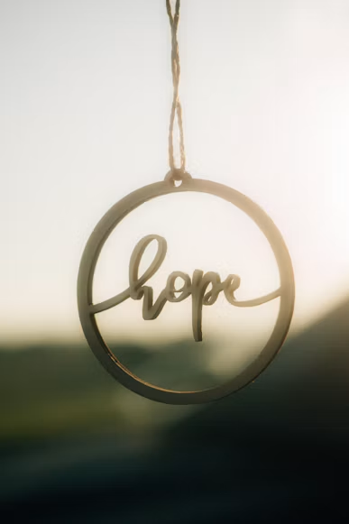
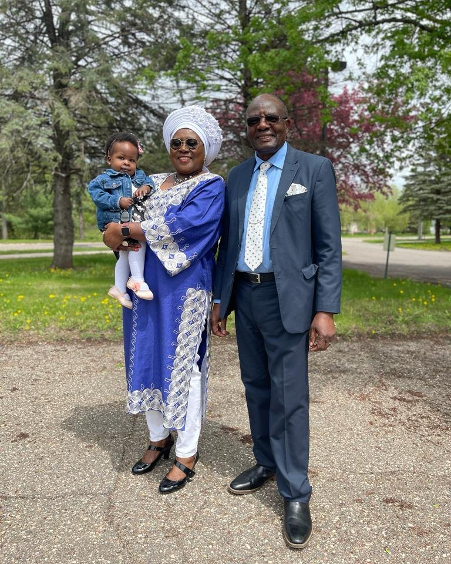

Generosity
Sharing resources and opportunities with people who need support.
Who we are
Our mission is simple: to share blessings with those in need. Join us on a journey of transforming lives through practical support and shared care.
Explore our work
Our mission
Zakaliya Shared Blessings Ministry was founded in 2024 to share donations and practical support with people in need.
We support children, help create opportunities for learning, and make room for people to gather in faith and community. Every act of generosity can help transform lives.
“The generous will themselves be blessed, for they share their food with the poor.”Proverbs 22:9 · NIV

Zakaliya Shared Blessings Ministry was founded in 2024 on a simple idea: share what we have with people who need it.
That vision continues in the children we support, the classrooms and church built in Kasozi, and the new skills we plan to teach young people.
See the work they startedSharing resources and opportunities with people who need support.
Offering care with respect, kindness, and attention to each person.
Investing in children, learning, and places that help communities grow.
Stand with the ministry
Learn more about the projects or support the ministry’s work.